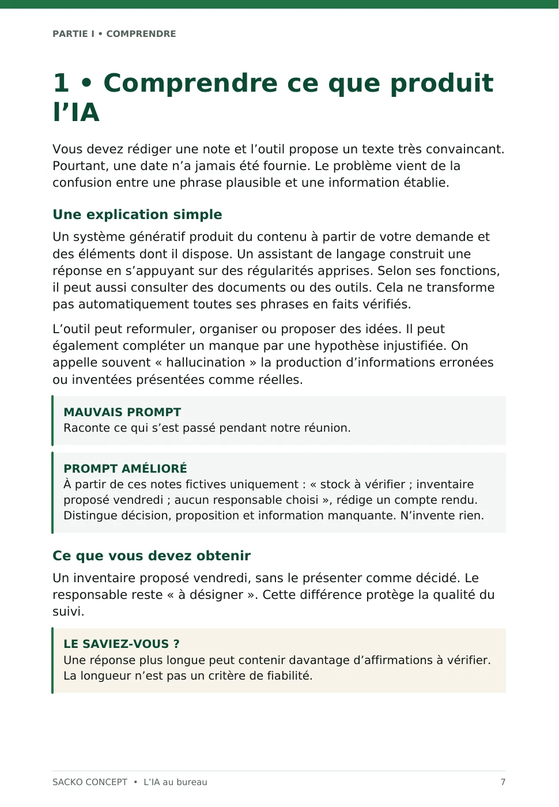

Mieux formuler vos demandes
Appliquez une trame en cinq éléments : contexte, objectif, informations, format et contrôle. Comparez un premier essai à une demande mieux préparée.
Guide pratique en français
Édition française · Octobre 2026Préparez de meilleures demandes, rédigez vos documents et avancez avec des contrôles simples. Un parcours concret pour les professionnels francophones, même débutants.
La commande sur 1TPE sera ouverte prochainement.
Ce que vous pouvez en faire
Partez d’une tâche précise, personnalisez votre demande, puis contrôlez le résultat avant de l’utiliser.
Appliquez une trame en cinq éléments : contexte, objectif, informations, format et contrôle. Comparez un premier essai à une demande mieux préparée.
Courriers, comptes rendus, formules Excel, organisation, RH et communication : adaptez les exemples à votre activité au lieu de partir d’une page blanche.
Apprenez à repérer les informations inventées, à vérifier les faits et les calculs, et à préparer uniquement les données que vous êtes autorisé à partager.
Le contenu exact
Le téléchargement regroupe cinq PDF distincts et un fichier LISEZ_MOI. Il s’agit de documents à lire et à pratiquer à votre rythme.
Bases, rédaction, Excel, RH, confidentialité, vérification et développement d’activité. Le parcours se termine par un programme pratique de 14 jours.
Administration, Excel et données, ressources humaines, entrepreneuriat, communication, productivité et contrôle qualité. Les champs à personnaliser sont indiqués.
Des exercices à réaliser avant de consulter les corrigés, pour tester votre compréhension et comparer votre résultat aux critères proposés.
Une checklist de confidentialité et une revue de 20 erreurs fréquentes. Les cases sont destinées à l’impression ou à l’annotation dans votre lecteur PDF.
Une trame synthétique à conserver près de vous pour construire vos propres demandes. Le fichier LISEZ_MOI précise l’ordre de lecture et les droits d’usage.
Produit numérique uniquement. Aucun article physique ne sera expédié.

Avant de choisir
Découvrez le sommaire, le cadre d’utilisation et un premier exercice avant de choisir le pack complet.
PDF · Les 8 premières pages du manuel · Sans inscription
Démarrer simplement
Assistants administratifs, responsables RH, entrepreneurs, salariés et indépendants qui veulent mieux utiliser un assistant d’IA au travail.
Vérifiez le contenu, la langue, les formats et les prérequis avant de commander.
Téléchargez le ZIP remis après votre achat, décompressez-le et conservez votre copie.
Lisez les instructions et travaillez d’abord sur les exemples fournis ou sur une copie de vos documents.
Les informations essentielles
Un lecteur PDF à jour suffit pour lire les documents, sur ordinateur, tablette ou téléphone. Pour réaliser les exercices, utilisez un outil d’IA autorisé dans votre contexte professionnel et, pour les exemples Excel, un tableur adapté.
Aucun abonnement d’IA, logiciel, classeur Excel ni accompagnement individuel n’est inclus. Certains outils ou fonctions externes peuvent être payants ou indisponibles selon votre offre.
L’achat autorise la lecture, l’impression et l’utilisation professionnelle des méthodes par l’acheteur. Les prompts peuvent être adaptés à ses propres tâches et livrables.
La revente, le partage public, la distribution collective des fichiers ou leur intégration dans un autre produit commercial nécessitent une autorisation de SACKO CONCEPT, sous réserve des droits impératifs applicables.
Lors de l’ouverture de la vente sur 1TPE, le pack sera remis au format ZIP à télécharger après paiement validé. L’accès de téléchargement et ses instructions seront communiqués par 1TPE. La commande est actuellement en préparation.
Produit à télécharger ; aucun envoi postal.
Pour une question liée au téléchargement ou au contenu acheté, indiquez votre référence de commande et le fichier concerné. Aucun coaching individuel ou abonnement de support n’est inclus.
Vos questions
Le pack comprend cinq PDF et un fichier d’instructions. Il ne comprend pas de cours vidéo ni de séance en direct.
Non. Le manuel commence par les bases et progresse vers des situations de travail, des contrôles et des exercices.
Les exercices textuels ne nécessitent pas tous une offre payante. L’accès aux fonctions de fichiers ou à certains outils dépend du service que vous utilisez ; aucun abonnement n’est fourni dans le pack.
Oui. Le texte des PDF est sélectionnable. Remplacez les champs, utilisez des données autorisées et vérifiez toujours la réponse avant diffusion.
Oui. Le manuel, les bonus, les exercices et les instructions de ce pack sont en français.
Le paiement, la facture et les demandes de remboursement sont encadrés par les conditions de vente de 1TPE, qui prévoient notamment une garantie contractuelle « satisfait ou remboursé » de 30 jours. Les droits d’utilisation du pack restent ceux précisés dans sa licence.
SACKO CONCEPT
Un manuel de 80 pages, 100 prompts et des exercices corrigés pour utiliser l’IA dans vos tâches professionnelles, vérifier ses réponses et mieux protéger vos données.
Contenu vérifié sur l’archive livrée de l’édition indiquée.
La commande de ce produit sur 1TPE est en préparation. Vous pouvez déjà consulter son contenu et son aperçu gratuit.